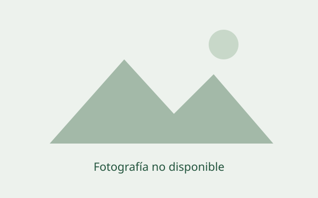

Explora senderos y descubre la naturaleza de tu tierra
Escribe el nombre de una ruta o ubicación para buscar
0 rutas encontradas
Cargando rutas…

Valle Central, Chile
Intenta ajustar los filtros o buscar con otros términos.
Detalle de la ruta